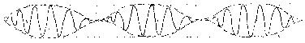

| Bottom | homepage |
|
|
|
|
|
Why Indeed |
|
|
9/11 Weather Anomalies and Field Effects
(page 4)
by
Judy Wood
This page last updated, May 19, 2008
|
click on images for enlargements.
|
This page is currently UNDER CONSTRUCTION.
|
Hurricane Erin, September 11, 2001
|
 |
| Figure 1. (9/11/01) Source:, (9/11/01) Original Image: (more) 010911_1867.jpeg |
 |
 |
| Figure 2. (Mirrored image) Mushroom May 2002 , Supercell in Oklahoma, , "I managed to capture some awesome shots on this cell. This one I have mirrored in the digital darkroom in order to portray what it might have looked like from distance." (5/02) Source: and more and webpage: |
Figure 3. Thunderstorm forming over Lusk by B. Keagen of Casper, Wyoming. Source: |
 |
 |
| Figure 4a. A Tesla coil Source: |
Figure 4b. Diagram of a Tesla coil Source: |
 |
 |
 |
| Figure 5. Tornado Source: |
Figure 6. Source: webpage: |
Figure 7. Anatomy of a hurricane Source: website: |
 |
| Figure 8. There are a lot of wavelengths here to choose from or "mix and match." (It need not be just one frequency). |
| Top Coils
|
|
click on images for enlargements.
|
| Top Field Effects for flaw Detection
|
| Top Tesla Coil |
| Top Storm Systems
|


|
click on images for enlargements.
|


|


|


| Top | ||
Ball lightning
There are several theories which might explain ball lightning. One says ordinary lightning sometimes causes matter to separate. Another says ordinary lightning hits the ground or a tree and dislodges a glowing mass. A third says fuel gases are ignited by electrical charges in the atmosphere and a fourth says the luminous globe is a product of electromagnetic radiation. |
||
| Reference 2. source: http://www.flatrock.org.nz/topics/ |
http://www.math.nsc.ru/directions/tornado-eng.htm
|
|
 |
|
| Figure 52 (Figure 1). |
Modeling the sinusoid according to the amplitude corresponds to a propagating electrical wave, which can cause phosphorescence in the gas present. The magnetic wave orthogonal to the electric wave does not happen for the sake of simplicity. The specific character of this electromagnetic wave lies in the fact that its amplitude and, respectively, its energy are periodically brought to a value of zero according to the spatial coordinates. The electromagnetic wave is transformed into the gravity-spin wave, which has the same appearance, but it is phase-shifted such that their total energy is constantly conserved. In contrast to the interference caused by the close proximity of two waves identical in nature, in the given case the antinode of the wave doesn’t move. The transverse planes, passing through the nodes, can project outward as the borders of a fixed vacuum domain.
We compare this computational model with the observations. Among the many models of ball lightning the model of Nobel laureate P. L. Kapitsa [13] is presented as the most interesting. According to his model ball lightning represents a resonator of electromagnetic waves. This model did not obtain the distinct properties of the volume occupied by ball lightning, and of the source of energy which excites and supports oscillations.
As we can see, the vacuum domain in combination with an incident gravity-spin wave makes the model of Kapitsa complete. During this time the same model attests to the existence of vacuum defects, to the benefit of the accepted hypothesis.
Available pictures of jagged lightning [14] exhibit a surprising coincidence with the picture, represented in Figure 1.
A vacuum domain in a gravitational field of the Earth is subject to gravitational polarization, that creates a strong localized change in the gravitational field, which is sufficient to turn over dishes or move furniture. In combination with this capability to pass through a wall or a closed window and to carry an electrical charge, a vacuum domain can fully explain all phenomena ascribed to poltergeist.
In several descriptions of rays, emitted by "flying saucers" is mentioned their ability to penetrate non-transparent objects. In Figure 4 is shown the schematic, explaining this event. The gravity-spin phasing of oscillations, for which all objects are transparent, falls on the object. Then the gravity-spin waves become visible electromagnetic waves.
As applied to an ellipsoidal volume, the picture of the vertical antinode and node locations of the electromagnetic wave has a view shown in Figure 2.
| Figure 53 (Figure 2). |
Figure 54 (Figure 3).
|
| Figure 55 (Figure 4). |
In connection with this concept, the main works on mathematical and physical description of tornado belong to the parent cloud. This approach seems to be completely justified taking into consideration that linear dimensions of a parent cloud are three orders of magnitude larger than a funnel.
We may and we have to agree with it, but let us not discard the following observation of Wobus [16]. A funnel left the cloud and moved forward. Soon a new cloud formed above it , reaching 10 km height. For several hours intense lightning were seen in this new cloud. There is another observation, now from near Shanghai: Not far from a boat a spray appeared on a sea surface; suddenly a rotating column formed of it, being about 10 m wide and 6 m high. The column began to grow rapidly. At first there were no clouds above it, but later a cloud formed, getting dark color. The column connected it with the sea.
As we see, these observations preserve the relation between cloud and funnel , but reverse it’s order.
Numerous observations of parent cloud indicated the existence long horizontal vortices in it , the vertical funnels being their extension.[17]. This fact waits for it’s dynamic explanation. What is the origin of the inner momentum turning kinetic vector of horizontal rotation to a vector of vertical rotation ?
The parent cloud has a three-story structure with rotation in horizontal plane , with middle and lower layer rotating in opposite directions [16], [17].
The interior hollow of a funnel has a clearly defined air walls, with lightning flashing between them. or water surface, then the action of current sharply displays itself. At the same time , when a funnel doesn’t touch the ground, there’s no vertical flow. In 1951 in Texas a funnel passed over an observer at 6 meter height , the interior having diameter about 130 m with walls of 3 meter width. Inside the hollow there was a brilliant cloud. There was no vacuum inside, because it was easy to breath . The walls were rotating with a very high speed, ant the rotation might be seen up to the top of the column. A bit later the funnel touched the neighbor’s house and immediately took it off [20].
This description is similar to many others [21], [22], [23] and require the explanation of the fact that rotation of the air necessarily leads to decrease of pressure. Why, being 6m above the ground, the funnel end causes neither damage nor intense air motion, while, upon touching the ground, destroys and moves off a house?
Direct measurements show that there is a low pressure area inside the funnel ( 951 mb, Topica June 8, 1966). Such pressure decrease may be resulted at air rotation speed of about 100 m/sec and should make the breath difficult. Why the funnel uncovers the river bed sucking out it’s water, while at the same time the observers even do not notice a wind when the funnel passes above them? The air flow inside the funnel is directed downward and reaches high velocities, while in the walls the air is spiraling up with velocities about 100-200 m/sec.
In [21] Flora writes that the speed differences between the wind in funnel and steady air on it’s periphery may be so abrupt that they cause striking events.
A funnel uprooted the apple tree, tearing it to pieces. A beehive standing a couple of meters from it was left safe [24].
A two-story timber house was taken off with it’s inhabitants and torn to pieces. A staircase of three stairs led to the door with a bench leaning against it. Both, bench and staircase were not moved. The funnel also torn off to wheels of a car standing by, not moving the car itself , while an oil lamp which stood near on a table under a tree , still kept burning [25].
Direct wind speed measurements lack mainly because of instruments wreckage . Indirect estimates give different magnitudes from 200 to 1300 km/h . Such range of magnitudes is explainable because estimates belong to different funnels at different stages of their existence.
The ability of objects to penetrate the other ones is also being referred to high rotation speeds. A small pebble punctures a glass like a bullet without forming fractures. One board penetrates the other without shattering it. A timber house wall is found punctured by an old charred plank , with it’s porous tip staying undamaged. A clover leaf was found pressed into a hard stucco wall. A 1.5 inches gate frame was found punctured by a piece of wood [26].
When a funnel touches the ground or water surface, a pillar of dust or water arises at the funnel’s foot and then falls down to the earth, forming a cascade. By Wegener’s opinion this dust or water cascade exists due to a circular vortex appearing around the funnel’s foot. Sometimes the cascade’s height reaches 2/3 of the funnel’s height, and sometimes it’s width may exceed the funnel height. Both these cases cannot be explained by the funnel collision with the ground or water surface. Sometimes the funnel is surrounded by a second wall, forming a collar or envelope, also rotating with high speed.
Sometimes, but rarely, the funnel has large round thickenings making it look like beads [27].
Almost always, especially in the first stages , the funnel touches the ground only at separate points and moves jumpwise .
Crossing a river , a funnel pulls up such a quantity of water, that it uncovers the river bed, forming a trench in the water. Such phenomena were seen on Mississippi and Moscow rivers. On Rhine, where depth was 25 m , the trench was 7 meters deep [28].
Tornadoes may lift and transport people and animals at 4-10 km distances , sometimes keeping them alive. One inch mollusks were moved 160 km [26] , but did fell upon the ground one hour before the cloud’s coming. On June 17,1940 in Meschery village of Gorky region, Russia tornado poured out about a thousand XIV century silver coins. The coins were falling from the cloud, but not from the funnel itself. The treasure was transported at several kilometers and was poured out at a compact area [28].
Irving 1879 tornado came across a new railroad bridge 75 m long and weighting 108 tons. It lifted it up and turn into a roll. When funnel destroyed a large stone school building, the fragments were rotating fast, but were not thrown out.
A large timber church with 50 people in it was moved 6 meters, no one was killed. In 1963 a funnel transported a house with 10 inhabitants at 400 m distance, all stayed alive [28].
The funnel , when it’s not touching the ground, emits buzzing or hissing noise. Faye [Fa] describes several cases when tornado was accompanied by ball lightning. Sometime short and wide sheet lightning surround a funnel. Sometime all the surface of a funnel shines a strange yellow glow. Sometime observers describe a bluish ball-like formations like ball lightning, but much larger, visible in a cloud. Sometime a slowly moving fire columns are seen. [VoM, Vo60,Fr ] . Jones describes a pulse generator - some center of electric activity looking as a round bright blue spot in a parent cloud appearing 30-90 minutes before a funnel [31].
II.3. Anomalies of tornado
An anomalous phenomenon is a phenomenon which can't be explained within the limits of the conventional conceptions. It raises questions but doesn't give answers. The tornado phenomenogy above, shows the anomality of its manifestations. Let us list briefly the questions raised by it:
- What is the material source : parent cloud for a funnel, funnel for a parent cloud ?
- What is the physics and transferring mechanism between slow rotation in the parent cloud to fast rotation in the funnel?
- What is the source of energy of the funnel formation from sea?
- What is the nature of inner momentum turning horizontal vortex in the parent cloud to a vertical vortex in funnel?
- What is the nature and genesis of inner momentum supporting opposite directed rotation of different parts of the parent cloud?
- What causes the funnel to move jumpwise?
- What is the origin of forces and momenta producing fast rotation of funnel walls and counter flows of air in the core and on periphery?
- How to explain the stability of thin and fast currents forming funnel walls?
- Why the funnel’s destructive action manifests itself only upon touching the ground?
- How to explain maple leafe pressing into the hard stucco?
- Why porous tip of charred plank stayed undamaged after puncturing a wall?
- Why pine stick didn’t break while puncturing the iron sheet?
- What momenta form annular vortex at funnel foot and then the cascade and funnel envelope?
- What is a mechanism of beaded funnels?
- Why funnels jump on the ground?
- What forces can make a deep trench in the water?
- How to explain tornado levitation effects?
- Why small objects may be transported by tornado at large distances without scattering?
- What force compensates the centrifugal force, preventing the debris scattering?
- Why the dynamics of the funnel changes after it’s touching the ground or water surface?
- How do ball, sheet and beaded lightning influence the tornado dynamics?
- What is the origin of luminous clouds and columns appearing in tornado?
- What is the nature of the «pulse generator» in a form of luminous cloud?
- What forces might act separately upon a car, tearing off it’s two wheels and leaving the body safe?
- What momentum turned a bridge in a roll?
II.4. Mechanism of tornado
The absence of answers in the limits of traditional conception sets us to turn to a new conception of tornado.
The numerous evidences of the association tornado with ball lightning, which is according to our conception nothing else as a defect of the physical vacuum, allow to attract the same model of a polarisation medium for an explanation of tornado. In this case a spin polarisation will play the greatest role among all possible polarisation properties of a physical vacuum.
In this connection let us recall the experiment of Einstein-de-Haas where rotation of a ferromagnetic placed in a constant magnetic field was demonstrated. This effect is explained by the fact that spins of a ferromagnetic initially oriented in an arbitrary way, under the action of a magnetic field have obtained a primary orientation in a field direction. And if in an initial state a summary momentum of all spins equaled to zero then in a magnetic field it had some non-zero value. According to the momentum theorem this leads to the rotation of a crystalline lattice in a direction opposite to spins. Beyond that point the inner moments of spins cause tangential stresses generating the torsional deformation of a ferromagnetic.
It is interesting to note that in this experiment the microscopic processes which are studied only by the quantum mechanics manifested themselves in a macroscopic process.
This well known effect didn't draw attention of neither physicists nor technicians for the reason that the torsion stresses are very small. A completely different situation obtains when a medium is a vacuum domain. According to our model a parent cloud of tornado beside its observable part has an unobservable part in the form of a vacuum domain. Under a joint action of gravitational and electrical field, which in a storm-cloud achieves a value in a hundreds of millions of volts, thin long vacuum domains with high density of defects are being stretched out from a domain. Spin polarisation of such a domain causes the rotation of a tornado's funnel. The calculations made by V.L.Dyatlov as applied to a vacuum with 100% defect density show that tangential stresses can achieve in it hundreds of kilograms per centimeter [11].
In the air when a funnel doesn't touch solid objects, unstable momentum is compensated by the rotation of a funnel and the air connected with this funnel. And in a solid body these momenta cause the large tangential stresses which are sufficient for cutting off the wheels of a car or for turning a brick church from the west to the east.
A positive mass localized on a lower end of a funnel explains a fast extension of a funnel and a subsequent blow against the surface of the earth or water.
A vacuum domain as well as a vacuum doesn't have the conductivity of self-gravitational current, it doesn't possess a free gravitational charges. Therefore while touching the surface only the surface gravitational charges go in the ground. At that a funnel is detached from the ground. Whereupon the process of polarisation again extends a funnel and it again touches the ground. In such a way it may be explained an observable dotted contact of a funnel with the earth.
The energy source as in the experiment of Einstein-de-Haas is energy of the magnetic field, in this case - energy of the polarisation. Thus a gravitational energy is transformed into a spin energy.
A cloud always rises through a height of 20 km above a funnel of tornado. Since an upper boundary of the troposphere passing in a middle latitudes at a height of 10-11 km confines all thermobaric processes in the atmosphere, a manifestation of tornado at such a height can't have a meteorological explanation, but it can have a gravidynamical explanation. A stretched and strongly polarized vacuum domain contains at its upper end a large positive mass and positive electrical charge. And both charges repel from the earth and rushes together with the air outside the troposphere. The entrapped moisture makes a domain visible.

|
|
| Figure 56 (Figure 5). |
The most widespread and the most inexplicable manifestation of tornado as a picking of solid objects by soft ones
(straws pick boards, chips pick trunks, a board penetrates a wall of a house, a thick steel plate) also can be explained by the accepted model, see Figure 5.
Under the action of the gravitational field of the Earth a gravitational charge is accumulated on the thin ends of different objects. It rushes to the gravitational charge created by the Earth on the surface of a house or tree. The charge density at some concentration of defects can be sufficient for a puncturing the firm objects. A charge carrier is carried along in a made aperture. It's solidity doesn't play any role.
By the same mechanism may be explained the fact why a maple leafe was found to be pressed in a hard stucco. If one could set a laboratory experiment for the demonstration of gravitational charges, one can't invent the better way of manifestation of their effect than in this experiment.
The probability that a board by its end hits a palm trunk is very small but howerever it differs from zero, but the probability that all boards pick palms in such a way that a palm is always in the middle of a board equals to zero.
But if to accept that an equipotential of a gravitational field passes along a palm, then a hit of a board in a palm and a stop of a board just in its middle becomes no longer accidental.
The positive gravitational charges originating on the lower surface of a parent cloud allow to keep and to transport not only silver coins and Amphibia but also large masses of water extracted from reservoirs.
The gravitational polarisation of a tornado's column allows to explain why fast rotated bricks from the destroyed school were stacked in a high hillock in a center of the area formed by a school foundation.
The positive gravitational charges originated on the lower end of a column cause the same polarisation on the earth surface, in this particular case - in the foundation of the school. The attraction of these charges has compensated a centrifugal force and gathered all bricks in a center of a column.
The following chapters are being translated:
II.5. Tropical hurricanes
Conclusion
References
- Dyatlov V.L. Linear equations of macroscopic electrogravidynamics.- Moscow, Inst.Teor.Appl.Phys. Acad. Nat.Sci., Preprint No.11, 1995 (in Russian)
- A.N Dmitriev, V.L.Dyatlov. A model of non-homogeneous physical vacuum and natural self-luminous formations. / IICA Transactions Novosibirsk, 1996, vol.3 - pp. 65-76// Novosibirsk, Inst. of Math. SB RAS, Preprint No16, 1995 (in Russian)
- Weisskopf Victor F. Physics in the twentieth century, The MIT Press , Cambridge, Massachusette, and London, England, 1972, 267 p.
- Heaviside O. A. Gravitational and Electromagnetic Analogy //The Electrician-1983, 281- 282 and 359pp.
- Frank L. A. and Huyghe P. The Big Splash. Birch Lane Press, 1990.
- Jefimenko O. D. Causality, Electromagnetic Induction and Gravitation, Star City: Electret Scientific Co. 1992, 180 p.
- Àkimov À. Å. , Tarasenko V. Ya. Models of polarized states of physical vacuum and torsion fields. //Izvestiya vyzov.Phizika.-1992, N3, 13-23 p. (in Russian)
- Terletzkii Ya. P., Rybakov Yu. P. Ìoscow.: Vyschaya Shkola,- 1990, 352 p. (in Russian)
- A.N. Dmitriev, Ju.P.Poholkov , E.T. Protasevich.,V.P.Scavinsky . Plasma generation in energy-active zones. Novosibirsk, Rus.Acad.Sci., Siberian Branch, Geol.Geophys.Inst., 1992 (in Russian)
- Dmitriev À. N \\ Space-earth connections and UFO, Novosibirsk, Òrina, 1996 (in Russian)
- Dyatlov V. L.Polarization model of nonhomogeneous physical vacuum. Novosibirsk, Publishing of Institute of Mathematics of Siberian branch of Russian Academy of Sciences, 1998, 183 p. (in Russian)
- Space ice, Nayka i zhizn', Nî 9.- 1998, 75 p. (in Russian)
- Kapitsa P. L. Nature of ball lightning. DÀN USSR, v.101, No 2, 1955, pp.245-248 (in Russian)
- Barry, James D., Ball lightning and bead lightning. Extreme Forms of Atmospheric Electricity, Plenum Press, New York, 1980
- Brooks E. M. The tornado-cyclone. Weatherwise,v.2, N 2, 1949, pp. 32-33
- Wobus H. B. Tornado from cumulo-nimbus. Bull.Amer. Met. Soc. v.21, Nî 9, 1940, pp.367-368
- Wegener A. Wind und Wasserhosen in Europa. In: Die Wissenschaft, Bd.60, Braunschweig, 1917, 301SS.
- Fujita T. A detaied analysis of the Fargo tornadoes of June, 1957, Res. Pap., Nî 42 Weather Bur. Unit. Stat., 1960, 67 pp.
- Kirk T. H. and Dean D. T. J. Report on a tornado at Malta, 14 October 1960, Met. Off. Geophys. Mem. Nî 107, 1963, 26 pp.
- Hall R. S. Inside a Texas tornado. Watherwise, 1951.-v. 4, No 3, pp. 54-57, 65
- Flora S. D. Tornadoes of the United States. Oklahoma, 1953, 194 pp.
- Justice A. A. Seeing the inside of a tornado. Monthly Weather Rev.1930.- v. 58, pp.57-58
- Hoecker W. H. Jr. Three-dimensional pressure pattern of the Dallas tornado and some resultant implications. Monthly Weather Rev.
- Flora S. D. Tornadoes of the United States. Oklahoma, 1953, 194 p.
- Hayes M.W. The tornado of October 9, 1913 at Lebanon, Kansas, Monthly Weather Rev. v. 1913, p.1528
- Finley J. P. Report on the tornado of May 29 and 30 , 1879 in Kansas, Nebraska, Prof. Paper of the signal Service, N 4, 1881, 116p.
- Lane F. W. The elements rage, London, 1966, 279 p.
- Hurd W. E. Some phases of waterspout.1950, v. 3, N 4, pp.75-78
- Nalivkin D. V. Hurricanes, storms,tornadoes. Nauka, Leningrad, 1969, 488 p. (in Russian)
- Lowe A. B. and McKay G. A. The tornadoes of Western Canada, Met. Branch, Hurd W. E. Some phases of waterspout behaviour. Weatherwise, v. 3, N 4, 1950, pp.75-78
- Faye H. Nouvelle etude sure les tempetes, cyclones, trombes ou tornado. Paris, 1897, 142 p.
- Jones H. L. The tornado pulse generator. Weatherwise, 1965, v. 18, N 2, pp.78-79, 85
- Vonnegut B. and Meyer J. R. Luminous phenomena accompaning tornadoes Weatherwise, v. 19, N2, 1966, pp. 66-68
- Òiron Z. Ì. Hurricanes. Leningrad. 1964, 398p. (in Russian)
- Dîve G. V. Laws of storms. Ñïá. 1869, 339 p.
- Duane J. E. The hurricane of Florida. Bull. Amer. Met. Soc. v. 16, 1935, pp. 238-139
- Douglas M. S. Hurricane N-Y. 1958, 393 p.
- Sedov L. I. Continuum mechanics.-Moscow: Nauka publ.- v.1, 1970 (in Russian)
- Chandrsuda C., Mehta R. D. Weir A. D. and Bradschaw P. J. Fluid Mech. 85, 693, (1978)
- Church C. R., Snow J. T., Baker G. L., Agee E. M. Characteristies of tornado - lide vortices as a function of swirl ratio: a laboratory investigation J. Atmos. Sci. 36.-1979, pp.1755-1776
- Glaser A.H. The structure of tornado vortex accoding to observation data. Cumulus Dynamics. Proceedings of the First Conference on Cumulus Convection, Portsmuth. 19-22 May, 1959
- Hardin J. C. The velocity field induced by a helical vortex filamcnt Phys. Fluid. v. 25 (11), November 1982
- Rossmann F. The physics of tornado Cumulus Dynamics. Proceedings
- Takaki R. Hussain A. K. M. F. The Phys. Fluids.- , v. 27, No 4.-1984
- Watson G. N. A treatise on the theory of Bessel functions. Cambridge: Cambridge Univ. Press, 1958
- Rossmann F. The physics of tornado Cumulus Dynamics. Proceedings of the First Conference on Cumulus Convection Held at Portsmuth, New Hompshire, 19-22 May 1959
- Widnall S. E. Ann. Rev. Fluid Mech. Z. -1975, 141p.
| back to the publications | back to the main page |
by V.I.Merkulov
(Institute of Theoretical and Applied Physics of Siberian Branch of Russian Academy of Sciences)
e-mail: merkulov@itam.nsc.ru
(1998?) Source: http://www.math.nsc.ru/directions/tornado-eng.htm
|
click on images for enlargements.
|
| More Tesla Coils |
| Reference Sites |
|
Erin 2001 wind analyses
http://www.aoml.noaa.gov/hrd/Storm_pages/erin2001/wind.html, (archived) Background on the HRD Surface Wind Analysis System http://www.aoml.noaa.gov/hrd/Storm_pages/surf_background.html, (archived) Hurricane Erin 2001 http://www.aoml.noaa.gov/hrd/Storm_pages/erin2001/, (archived) NASA Makes A Heated 3-D Look Into Hurricane Erin's Eye http://www.sciencedaily.com/releases/2005/10/051007090048.htm, (archived) Images and Data from Terra http://terra.nasa.gov/Gallery/ Images http://modis-atmos.gsfc.nasa.gov/IMAGES/index.html , (archived) |
 |
| Figure 61. See Anomalies at the WTC and the Hutchison Effect for more information Source: |
|
Continue to next page.
|
| Top | homepage |
|
|
|
|
|
Why Indeed |
|
|
|